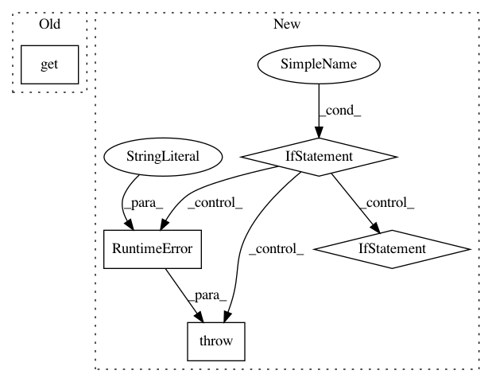

415be78cc0d1275a29d0ceda550d0d7a7a5224ea,python/ray/util/sgd/torch/training_operator.py,TrainingOperator,train_epoch,#TrainingOperator#Any#Any#,120
Before Change
metric_meters.update(metrics, n=metrics.pop(NUM_SAMPLES, 1))
self.global_step += 1
if self.scheduler and info.get(SCHEDULER_STEP) == SCHEDULER_STEP_EPOCH:
self.scheduler.step()
return metric_meters.summary()
After Change
Returns:
A dict of metrics from training.
if not hasattr(self, "model"):
raise RuntimeError("Either set self.model in setup function or "
"override this method to implement a custom "
"training loop.")
model = self.model
scheduler = None
if hasattr(self, "scheduler"):
scheduler = self.scheduler
if self.use_tqdm and self.world_rank == 0:
desc = ""
if info is not None and "epoch_idx" in info:
if "num_epochs" in info:
desc = f"{info["epoch_idx"] + 1}/{info["num_epochs"]}e"
else:
desc = f"{info["epoch_idx"] + 1}e"
// TODO: Implement len for Dataset?
total = info[NUM_STEPS]
if total is None:
if hasattr(iterator, "__len__"):
total = len(iterator)
_progress_bar = tqdm(
total=total, desc=desc, unit="batch", leave=False)
metric_meters = AverageMeterCollection()
In pattern: SUPERPATTERN
Frequency: 3
Non-data size: 5
Instances
Project Name: ray-project/ray
Commit Name: 415be78cc0d1275a29d0ceda550d0d7a7a5224ea
Time: 2020-09-08
Author: amogkam@users.noreply.github.com
File Name: python/ray/util/sgd/torch/training_operator.py
Class Name: TrainingOperator
Method Name: train_epoch
Project Name: IDSIA/sacred
Commit Name: 0cd42478586c9cb1febb6b76eea068aac8869a1e
Time: 2018-01-24
Author: dismaldenizen@gmail.com
File Name: sacred/ingredient.py
Class Name: Ingredient
Method Name: __init__
Project Name: stellargraph/stellargraph
Commit Name: 1dbc4bf21b2f67189f3a0c761a774ccaadb47587
Time: 2018-07-26
Author: docherty@gmail.com
File Name: stellar/mapper/node_mappers.py
Class Name: GraphSAGENodeMapper
Method Name: __init__